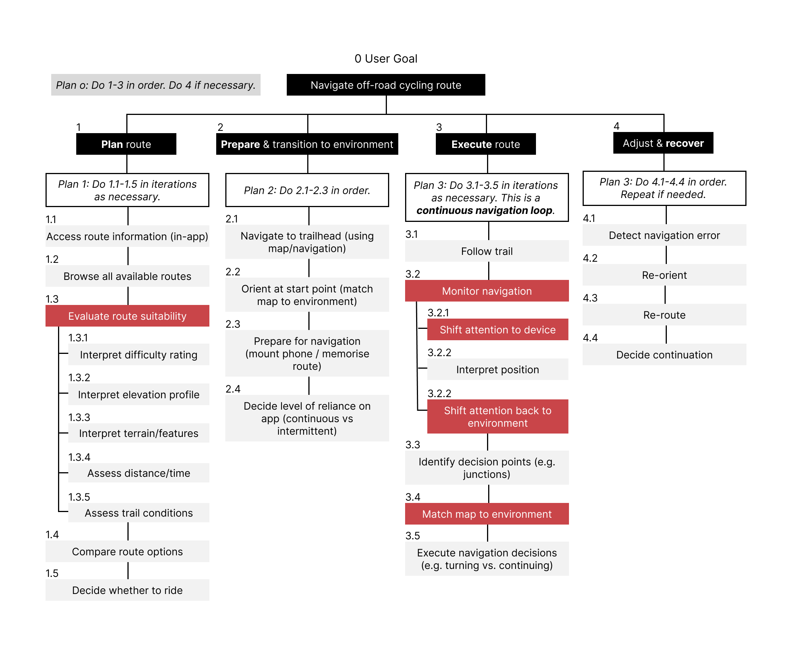

A pre-ride tool used
in the middle of a ride
Trailforks Pro is well-built for pre-ride planning: browsing trails, checking difficulty ratings, reviewing elevation profiles. Where it falls short is in-ride navigation. The turn-by-turn guidance is limited, and the interface was designed for a moment of calm attention that doesn't exist on a fast, technical trail.
Mountain biking demands continuous coordination between physical control and spatial awareness. Dividing attention between the trail and a screen creates the conditions for errors: misread difficulty ratings that put riders on terrain beyond their ability, missed junctions that send them down the wrong trail, and moments of interface interaction that cause instability or loss of control.
These aren't edge cases. They're predictable consequences of an interface that assumes available visual attention in an environment where it doesn't exist.
